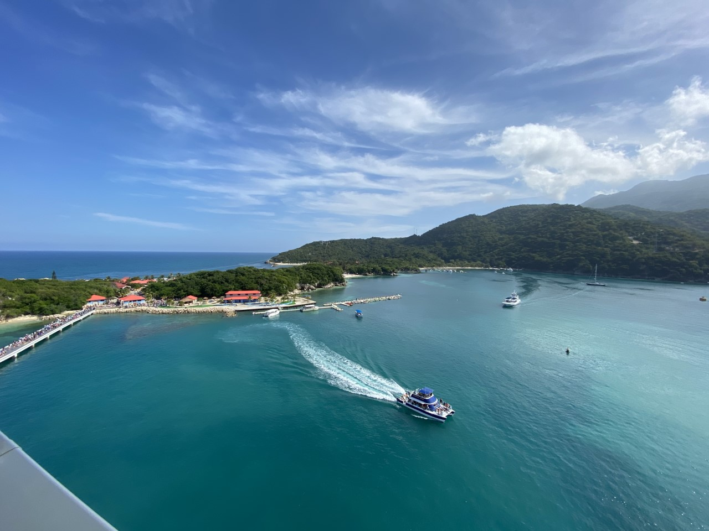
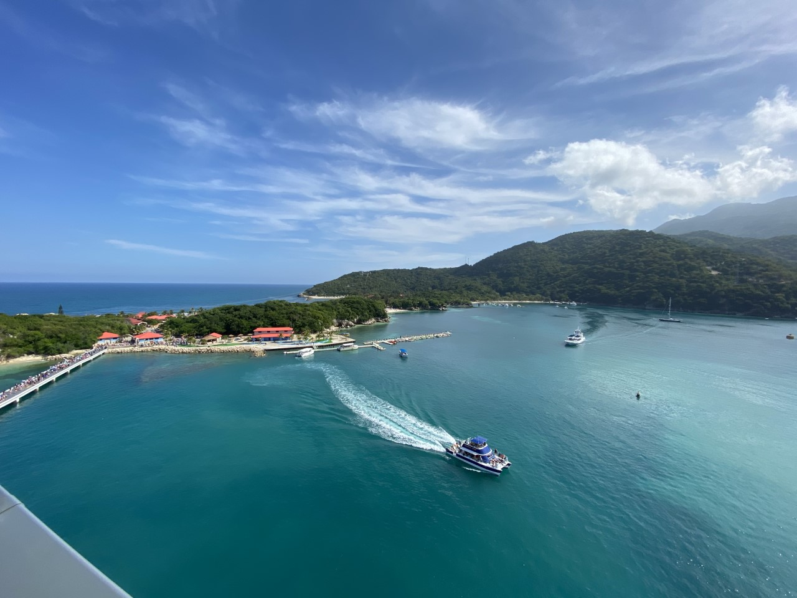

Where are the best places to go?
Depending on which cruise line you pick, it will somewhat decide where you can travel to. For example, Royal Caribbean mainly travels the Caribbean, odd enough.. Some of the places that I have been to have been some cities in Mexico including Cozumel, and Progresso. Cayman Islands, San Juan, St. Maarten and finally Haiti. All of the places I have been to have been asboutely beautiful. These are just a few examples of the places you can go! To find out exactly all the places you can go, the individual cruise lines website will have all the details. One of my dream destinations is Antartica! I will include some pictures of my favorite places!
Labadee, Haiti
 
